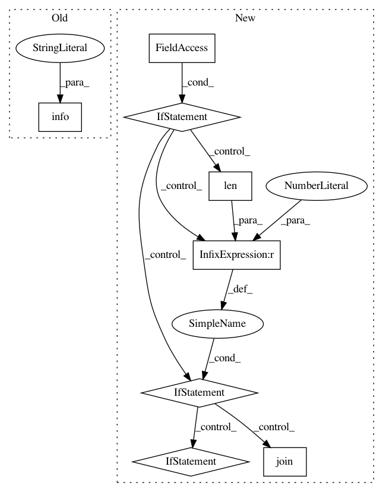

cf03844960278b258e4f9597af2a073ca711818e,wandb/sdk_py27/wandb_init.py,_WandbInit,init,#_WandbInit#,428
Before Change
self._reporter.set_context(run=run)
run.on_start()
logger.info("atexit reg")
self._hooks = ExitHooks()
self._hooks.hook()
atexit.register(lambda: self._atexit_cleanup())
After Change
s = self.settings
config = self.config
if s.reinit:
if len(self._wl._global_run_stack) > 0:
if len(self._wl._global_run_stack) > 1:
wandb.termwarn(
"If you want to track multiple runs concurrently in wandb you should use multi-processing not threads" // noqa: E501
)
wandb.join()
if s.mode == "noop":
// TODO(jhr): return dummy object
return None
In pattern: SUPERPATTERN
Frequency: 3
Non-data size: 8
Instances
Project Name: wandb/client
Commit Name: cf03844960278b258e4f9597af2a073ca711818e
Time: 2020-07-27
Author: jeff@wandb.com
File Name: wandb/sdk_py27/wandb_init.py
Class Name: _WandbInit
Method Name: init
Project Name: wandb/client
Commit Name: cf03844960278b258e4f9597af2a073ca711818e
Time: 2020-07-27
Author: jeff@wandb.com
File Name: wandb/sdk/wandb_init.py
Class Name: _WandbInit
Method Name: init
Project Name: home-assistant/home-assistant
Commit Name: bfb5089ed59f1df8cf53a3b517ac6b091f539a26
Time: 2015-03-08
Author: andyt05@gmail.com
File Name: homeassistant/components/device_tracker/nmap_tracker.py
Class Name: NmapDeviceScanner
Method Name: _update_info